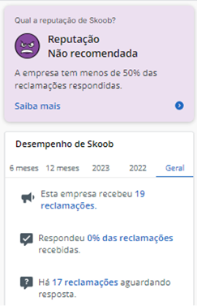
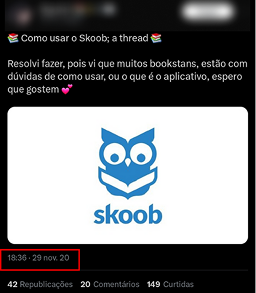
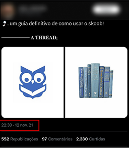
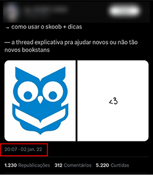
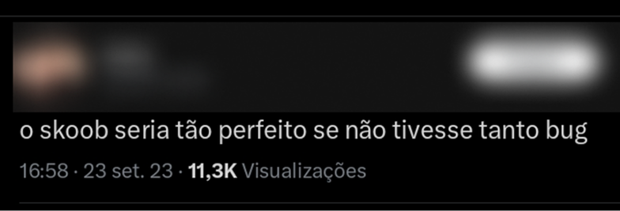
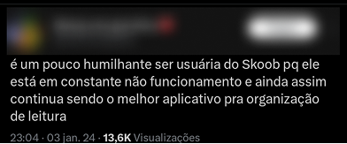
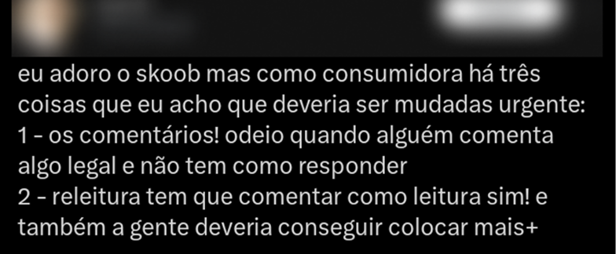

Se prepara para ler a maior coincidência que já vivi...
Tudo começou com um desafio técnico para um processo seletivo que estava participando. A ideia era simples:
analisar um aplicativo que uso diariamente com problemas de usabilidade, justificar minha escolha e apresentar
uma solução. Somente isso.
Eu, como uma boa leitora que sou, pensei no meu maior inimigo: o Skoob.
Sou fã da ideia e propósito do aplicativo (de verdade mesmo), mas o quanto eu sofria para mexer nele era
brincadeira. Mas aí é que tá, será que só eu tinha essa dor? Será que não era eu que não sabia mexer direito?
Será que não era minha pobre internet que não dava conta?
Mas como diz meu velho amigo Don Norman:
“Quando as pessoas têm dificuldade com alguma coisa, a culpa não é delas – é do design”
Então eu só precisava provar o meu ponto.

fonte: vozes da minha cabeça
Comecemos pelo mais simples: listar os problemas que eu via enquanto usava o aplicativo.
Fácil, fácil, fácil.
Eu conseguia fazer uma lista só com esses pontos, mas aqui eu precisava ser estratégica, ser cirúrgica e
objetiva com o que eu colocava, porque depois eu precisaria provar e pensar em uma solução.
Foi então que agrupei os problemas em 3 grandes grupos: excesso, navegação e interação.
Interface e navegação
Conteúdo denso e excesso de seções
Interface e navegação
Conteúdo denso e excesso de seções
Interface e navegação
Conteúdo denso e excesso de seções
Mas o que diziam os universitários?
Para essa seção é importante ressaltar que os dados foram analisados em novembro de 2024, ou seja, as avaliações
podem ter sofrido alterações. (sim, elas sofreram. Eu fui ver agorinha)
Navegador de pesquisa

Redes sociais



"Quando você precisa explicar o design, ele falhou"



“O design deve ser centrado nas necessidades das pessoas, e não forçar as pessoas a se adaptarem ao
design”
Mas cadê a coincidência?
Pois então, poucos dias depois que apresentei minha solução, o Skoob simplesmente teve seu visual todo
atualizado. Visual esse muito parecido com o que apresentei anteriormente.
Alguns fluxos ainda continuaram o mesmo, tendo só a parte estética alterada.
Mas qual a chance de eu pensar em algo, colocar em prática e depois ver isso sendo aplicado na realidade?
Se fiquei triste? Jamais! Fiquei, na verdade, feliz por perceber que minha linha de raciocínio estava alinhada
com o que o mercado já vinha apontando.
Tudo melhora ao perceber que essas mudanças, ainda que simples, elevaram a taxa de aceitação do público e a nota
geral no Reclame Aqui, comprovando que um bom design vai muito além da estética: ele considera a experiência
do
usuário e se sustenta em uma visão estratégica.